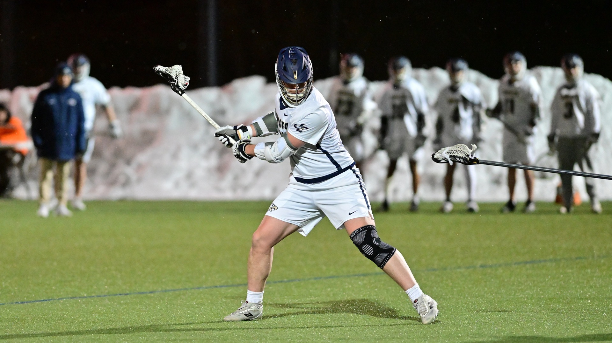

Play with Precision. Fly with Purpose.
Birds of Prey is a lacrosse brand built for athletes who demand the best. Our gear is designed for performance, durability, and style on and off the field.
About Our Brand
Founded by athletes, Birds of Prey Lacrosse is committed to producing high-quality equipment and apparel for players at every level. Whether you are just starting out or competing at the highest level, we have the gear to help you perform.
Our navy blue and gold colors represent excellence, loyalty, and the drive to win. Every product we make is crafted with those values in mind.
Why Choose Birds of Prey?
- Premium materials built for competitive play
- Gear designed by lacrosse players, for lacrosse players
- Affordable pricing without sacrificing quality
- Apparel and equipment for all positions
- Trusted by high school and college programs
Lacrosse Resources
Stay up to date with the lacrosse community through these trusted sources:
- US Lacrosse - The national governing body for lacrosse in the United States
- NCAA Lacrosse - College lacrosse news, stats, and standings
- Lax All Stars - Lacrosse culture, gear reviews, and highlights